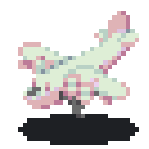

Travel
Where am I going next??
Outside of making things look pretty, my greatest passion is travelling. I love discovering new cultures & tasting all the delicious foods this world has to offer. My favourite place I have been to is Hong Kong, not only for its super cheap street food and famous neon lights, but also for its amazing hikes, islands and of course, beaches.
My next trip is to Tokyo in April, just in time for Easter holidays. I have a good friend who is on exchange there, and I figured it was a good chance to keep her company (and also enjoy cherry blossom season, of course xD )
After that I am going to France for a week in summer, and then going on a group trip to Korea just before school goes back. Yes, I have been to Korea a million times now butas the designated korea tour guide of my friend group I kinda have to go , right?
That's my travel plans for now. I hope I don't make more because my wallet will have a heart attack, but who knows?
